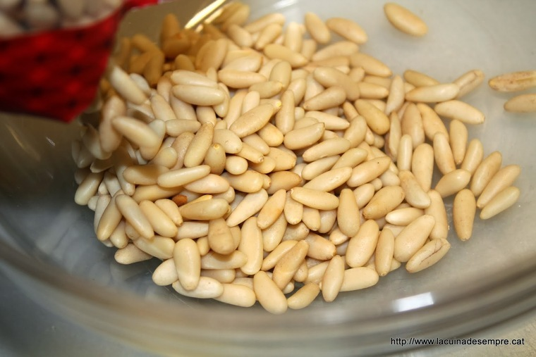
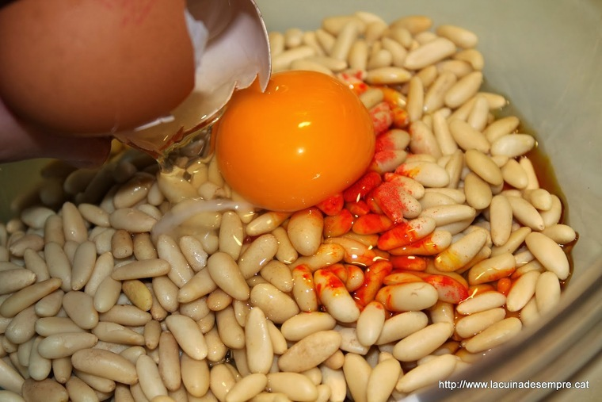
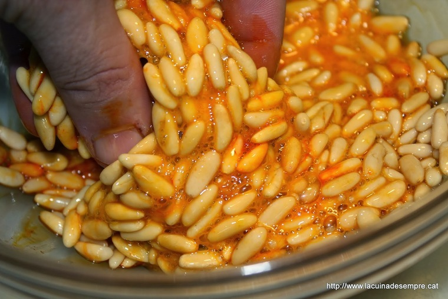
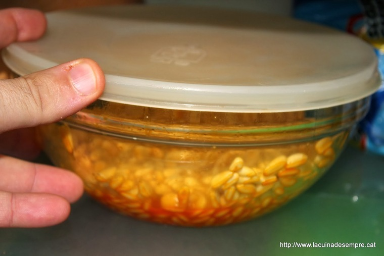

Seguiu aquestes instruccions al peu de la lletra i mesureu-ho tot com s'indica. Qualsevol variant pot tenir conseqüències. Si els voleu de pastisseria, de veritat de veritat, feu-me cas. I si, aquests panellets porten una petita quantitat de patata. De fet és puré de patata, flocs deshidratats. A les pastisseries es fa servir el puré com a fècula per a texturitzar el massapà.

També volia fer-vos un apunt important sobre els pinyons. compte amb els pinyons que compreu! ...que siguin europeus, no asiàtics!. Si us fixeu, venen uns pinyons més gruixuts, amb una forma de pera més exagerada del normal i que, a més, tenen la punta de color negre. Això vol dir que són del tipus asiàtic "Pinus Koraiensis". La diferència amb el pinyó autèntic i tradicional "Pinus pinea" (el pinyó pinyoner de casa nostra) és bàsicament el gust. Són mil vegades més bons (i cars) els pinyons europeus que els asiàtics. Si podeu feu la prova i tasteu-ne un de cada. Molta gent això no ho sap, ja que visualment son molt semblants.
I si no teniu temps de fer-los a casa, compreu els panellets a la pastisseria, que són artesans i no es poden comparar amb els assortiments de panellets que venen al súper o als forns de pa. No voleu saber què porten aquells panellets industrials... Que son cars els de pastisseria? no us diré que no, però amb aquesta recepta entendreu una mica més per què el productes artesans i de qualitat valen el que valen. Si voleu, compreu-ne menys, però de bons, de pastisseria sempre.
Els panellets, en general, s'han de flamejar, no coure. Això vol dir que els heu de tenir a forn el temps just i necessari per daurar-los (uns 6-8min. a 220-230º graus). Si els teniu més temps el massapà se us pot fondre. Així que els heu de vigilar bé. Abans de continuar, us recomano la lectura prèvia de la recepta "Massapà blanc" que us farà falta.
Per fer panellets de pinyó el dia abans haureu de preparar l'adob. Si no ho feu us costarà molt fer que els pinyons s'agafin al massapà. Aboquem els pinyons en un bol.
Un ou sencer....
...i ho barregeu bé...amb les mans bens netes.
.Tapeu-los i reserveu-les a la nevera.
